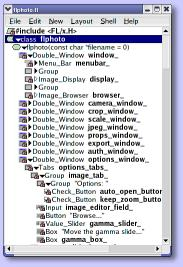

The Fast Light Tool Kit ("FLTK", pronounced "fulltick") is a a cross-platform C++ GUI toolkit for UNIX(r)/Linux(r) (X11 or Wayland), Microsoft(r) Windows(r), and macOS(r). FLTK provides modern GUI functionality without the bloat and supports 3D graphics via OpenGL(r) and its built-in GLUT emulation. It was originally developed by Mr. Bill Spitzak and is currently maintained by a small group of developers across the world with a central repository in the US.
The Fast Light Tool Kit ("FLTK", pronounced "fulltick") is a a cross-platform C++ GUI toolkit for UNIX(r)/Linux(r) (X11 or Wayland), Microsoft(r) Windows(r), and macOS(r). FLTK provides modern GUI functionality without the bloat and supports 3D graphics via OpenGL(r) and its built-in GLUT emulation. It was originally developed by Mr. Bill Spitzak and is currently maintained by a small group of developers across the world with a central repository in the US.
fltk is very light (1mo).
develop your interfaces without difficulty with ffluid,
and design very light applications
